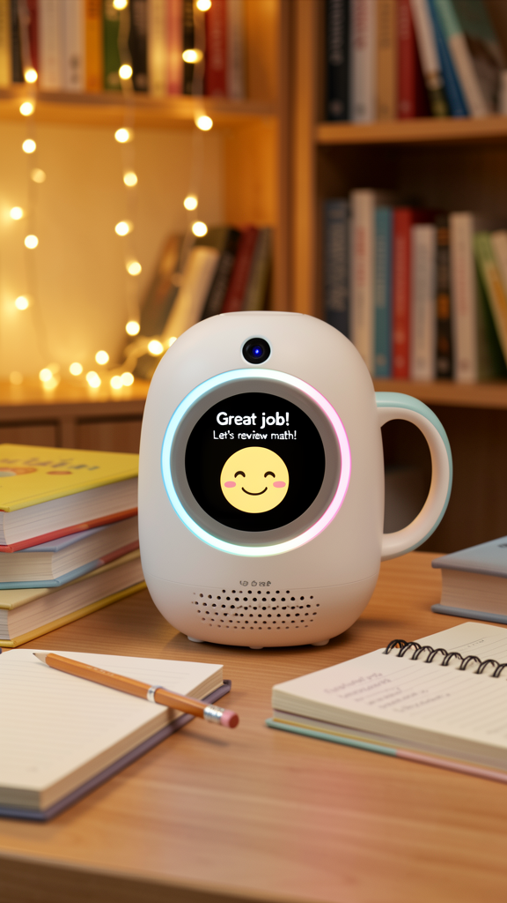
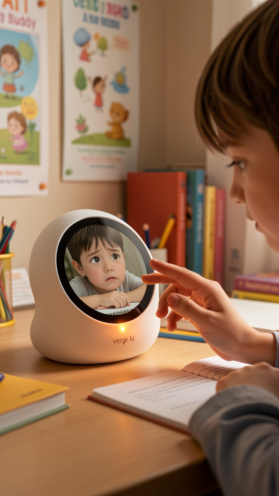
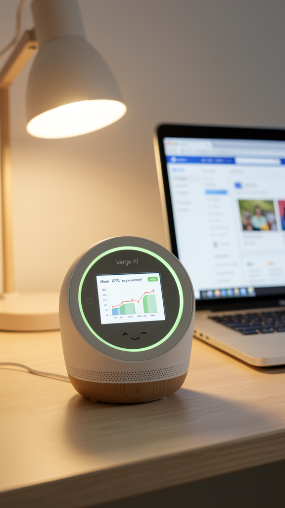

Mockup: Desktop Companion
Mockup: Emotional Support
Mockup: Progress Tracking"You made the same mistake on this problem type last week — remember the butterfly method?" Study Buddy remembers every wrong answer, every learning milestone, and uses past context to teach better, not just repeat.
"你上周在同一类问题上也犯了同样的错误——还记得蝴蝶法吗？" Study Buddy记住每一个错误答案、每一个学习里程碑，利用过往上下文进行更好的教学，而非简单重复。
"你上週在同一類問題上也犯了同樣的錯誤——還記得蝴蝶法嗎？" Study Buddy記住每一個錯誤答案、每一個學習里程碑，利用過往上下文進行更好的教學，而非簡單重複。
Detecting frustration from voice tone and facial expression, Buddy proactively suggests: "I can see you're getting frustrated — want to switch to a 2-minute math game to reset?" No pressure, no judgment.
Buddy通过语音语调和面部表情检测挫败感，主动建议："我看你有些沮丧——要不换个2分钟的数学游戏放松一下？" 没有压力，没有评判。
Buddy通過語音語調和面部表情檢測挫敗感，主動建議："我看你有些沮喪——要不要換個2分鐘的數學遊戲放鬆一下？" 沒有壓力，沒有評判。
Snap a photo of a problem or say "I don't get this" — AI recognizes the question type, cross-references with the student's error history, and provides scaffolded guidance instead of just giving the answer.
拍下问题照片或说一声"这题我不会"——AI识别题型，关联学生过往错误历史，提供脚手架式引导而非直接给出答案。
拍下問題照片或說一聲"這題我不會"——AI識別題型，關聯學生過往錯誤歷史，提供腳手架式引導而非直接給出答案。
Every Monday, parents receive an AI-generated report: topics covered, accuracy trends, areas for improvement, and suggested reinforcement strategies. Transparent, never surveillance.
每周一家长收到AI生成的报告：涵盖知识点、准确率趋势、待提升领域及建议的强化策略。透明可见，绝非监视。
每週一家長收到AI生成的報告：涵蓋知識點、準確率趨勢、待提升領域及建議的強化策略。透明可見，絕非監視。
Remembers every tutoring session — wrong answers, learning pace, even yesterday's frustration. The AI tutor that actually knows your child.
记住每一次辅导——错误答案、学习节奏、甚至昨天的沮丧情绪。真正了解你孩子的AI家教。
記住每一次輔導——錯誤答案、學習節奏、甚至昨天的沮喪情緒。真正了解你孩子的AI家教。
No fear of asking "stupid questions." Zero-pressure voice environment. Students can ask until they truly understand.
不怕问"蠢问题"。零压力语音环境。学生可以问到真正理解为止。
不怕問"蠢問題"。零壓力語音環境。學生可以問到真正理解為止。
Voice tone + expression analysis detects when a student is overwhelmed. Proactive de-stress suggestions — learn better, not harder.
语音语调+表情分析检测学生是否不堪重负。主动减压建议——更好学，而非更苦学。
語音語調+表情分析檢測學生是否不堪重負。主動減壓建議——更好學，而非更苦學。
Weekly AI reports highlight progress and areas needing support. Not surveillance — partnership in education.
每周AI报告突出进步和需要支持的领域。不是监视——而是教育中的合作伙伴关系。
每週AI報告突出進步和需要支持的領域。不是監視——而是教育中的合作夥伴關係。
| Display | 显示屏 | 顯示屏 | 6"–8" touchscreen, anti-glare, rounded edges |
| Form Factor | 外形 | 外形 | Desktop, round soft-rubber bumper (child-safe), adjustable angle stand |
| Colors | 颜色 | 顏色 | Vibrant Blue / Mint Green / Sunshine Yellow |
| Weight | 重量 | 重量 | ~300–500g |
| Battery | 电池 | 電池 | Built-in lithium, 8h+ battery life |
| Speaker | 扬声器 | 揚聲器 | Front-firing dual speakers (voice clarity priority) |
| AI SoC (Standalone) | AI SoC（独立版） | AI SoC（獨立版） | RK3588 (6 TOPS NPU) + ESP32-S3 |
| AI SoC (Satellite) | AI SoC（卫星版） | AI SoC（衛星版） | ESP32-S3 only (inference offloaded to AI Home Hub) |
| SLM Inference | 小模型推理 | 小模型推理 | Qwen3-2B W8A8 @ RK3588 NPU (11.5 t/s) |
| Emotion Sensing | 情绪感知 | 情緒感知 | OpenCV + Audio Sentiment — expression + voice tone analysis |
| Speech (ASR) | 语音识别 | 語音識別 | SenseVoice Small @ NPU (~150ms) — Cantonese + Mandarin |
| Speech (TTS) | 语音合成 | 語音合成 | CosyVoice @ CPU (~300ms) — emotional voice responses |
| Memory Storage | 存储 | 存儲 | SQLite (local) + Hub Sync — full learning history + error graph |
| Connectivity | 连接 | 連接 | WiFi + BLE + WebSocket Agent Protocol |
| Safety Design | 安全设计 | 安全設計 | No sharp edges — fully rounded. No camera streaming — all processing local. Anti-glare screen. |
| Cloud Fallback | 云端备用 | 雲端備用 | DeepSeek V4-Flash / Qwen3.6-Plus (complex reasoning, optional) |
Not a Q&A machine — a study partner who remembers you. Learning is personal, not transactional.
不是问答机器——是记住你的学习伙伴。学习是个人化的，而非交易式的。
不是問答機器——是記住你的學習夥伴。學習是個人化的，而非交易式的。
Adapts difficulty automatically. Never too hard (frustration), never too easy (boredom).
自动调整难度。不会太难（挫败），也不会太易（无聊）。
自動調整難度。不會太難（挫敗），也不會太易（無聊）。
Praises effort over outcome. No scores, no rankings — celebrates progress, not perfection.
赞美努力而非结果。没有分数、没有排名——庆祝进步，而非完美。
讚美努力而非結果。沒有分數、沒有排名——慶祝進步，而非完美。
Weekly reports inform without surveilling. AI augments the parent-child education relationship.
每周报告提供信息而非监视。AI增强亲子教育关系。
每週報告提供信息而非監視。AI增強親子教育關係。